「不能維持生活」之判斷標準與實務攻防
民法第 1117 條受扶養權利要件之實務認定
謝秉錡律師事務所 2026 年 8 月
1/14
一、案件事實（已去識別化）
二、核心法條：民法 §1114／§1117／§1118／§1118-1
三、「不能維持生活」之判斷標準
四、最相近判決：有資產但受抵押權限制
五、有利與不利論點
六、實務判決彙整
七、答辯策略
2/14
3/14
當事人（父）為年長之直系血親尊親屬，向三名子女請求給付扶養費。
名下房地部分持分，其上疊有多重負擔：
銀行最高限額抵押權
早年設定
子女設定之最高限額抵押權
近年設定，約定年利率
預告登記
請求權人為子女
銀行假扣押登記
保全程序，限制範圍為該持分
核心爭點：持分受抵押權、預告登記與假扣押多重限制，是否仍屬 §1117「不能維持生活」？
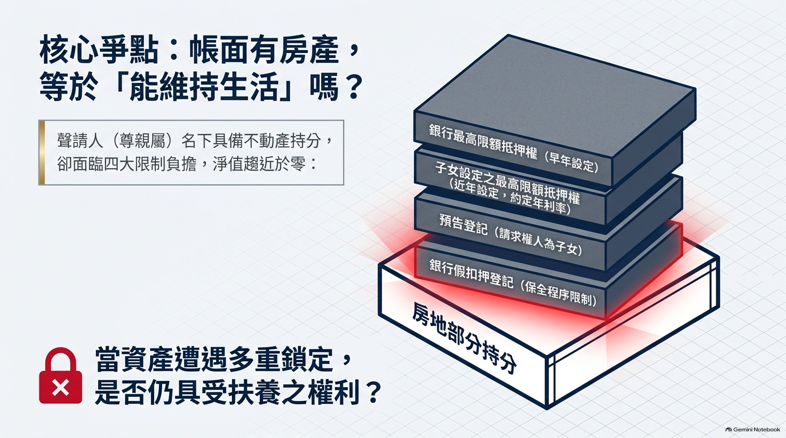
4/14
條文
內容
本案意義
§1114 I①
直系血親互負扶養義務
父子間扶養義務之基礎
§1117（關鍵）
受扶養以不能維持生活而無謀生能力為限；直系血親尊親屬不適用無謀生能力限制
聲請人僅須證明「不能維持生活」
§1118
負扶養義務致不能維持自己生活者，得免除（尊親屬僅能減輕）
子女經濟困難僅得減輕，不得全免
§1118-1
受扶養權利人對義務人虐待、棄養等情節重大得免除
子女之減免抗辯
4/14
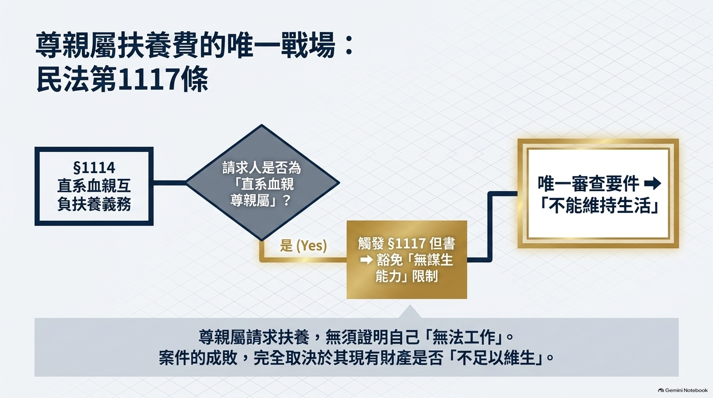
5/14
兩條實務路線
路線
定義
來源
無財產路線
「無財產足以維持生活」
最高法院 81 台上 1504、96 台上 2823
財產＋勞力路線
「不能以自己之財產及勞力所得維持自己之生活」
最高法院 78 台上 1580、114 家親聲 129/98
認定時點（最高法院 108 台上 1757）
以事實審言詞辯論終結時之財產狀況，及該財產日後可能消減之情事，推認能否以自己財力維持生活。
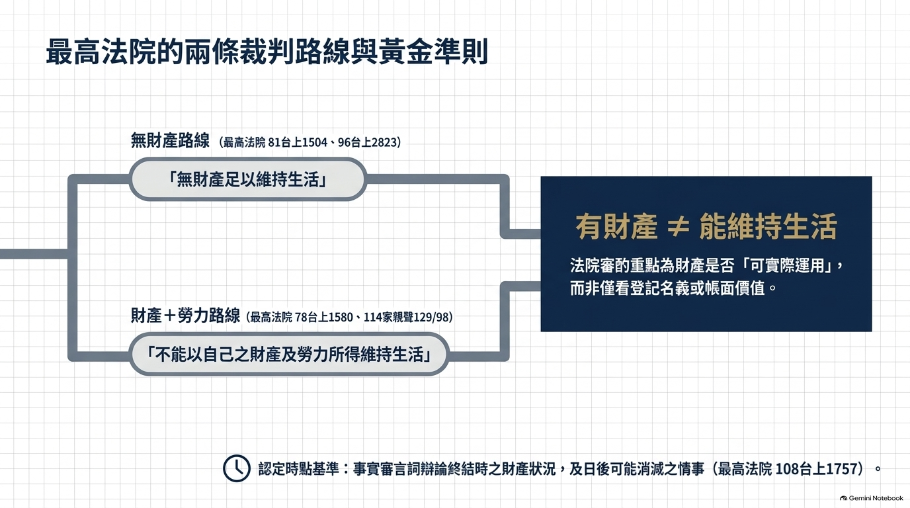
6/14
法院審酌重點：該財產是否可實際運用，而非僅看登記名義或帳面價值。
公同共有無法變現
114 家親聲 77：名下財產 8,033 萬元，但為公同共有、無法變現 → 仍認不能維持生活
有存款數百萬也可能不夠
98 家上易 15：存款 205 萬＋老人年金 3,000／月，年利息約 5 萬 < 年生活費 21.6 萬 → 不能維持生活
不動產價值豐厚無貸款
則可能認定能維持生活（反面推論）
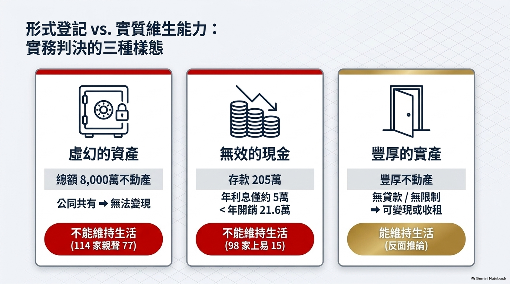
7/14
判決要旨
父母名下雖各有數千萬元資產，惟房地設最高限額抵押、借款餘額數百萬元、土地為道路用地開發受限、供家人居住使用 → 法院認年滿 65 歲退休後不能維持生活，扶養費請求准許。
本案類比
聲請人持分同受高額抵押權限制 → 可類比援引「有資產但受抵押權限制，仍認不能維持生活」。
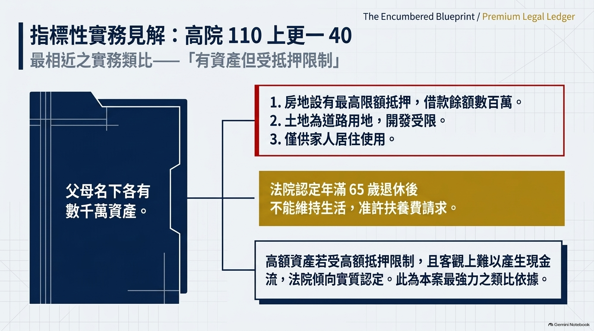
8/14
判決要旨
財產無法出租收取租金、亦無法出售變現以獲取生活所需現金者，即應認有不能維持生活之情事。
判斷重點：資產之「變現性」與「收益性」——不能只看所有權名義。
與本案關聯：假扣押登記後，持分客觀上無從出售、出租或再借貸變現 → 恰合本判決之「無法變現」要件。
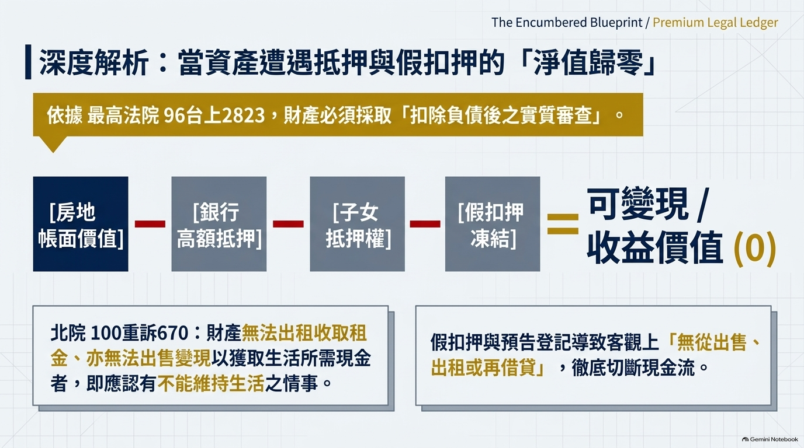
9/14
部分持分疊有高額抵押＋預告登記＋假扣押登記 → 淨值所剩無幾
假扣押後客觀上無從出售、出租或再借貸變現
最高法院 96 台上 2823：要求扣除負債後實質審查（財產 769 萬、負債 500 萬 → 發回）
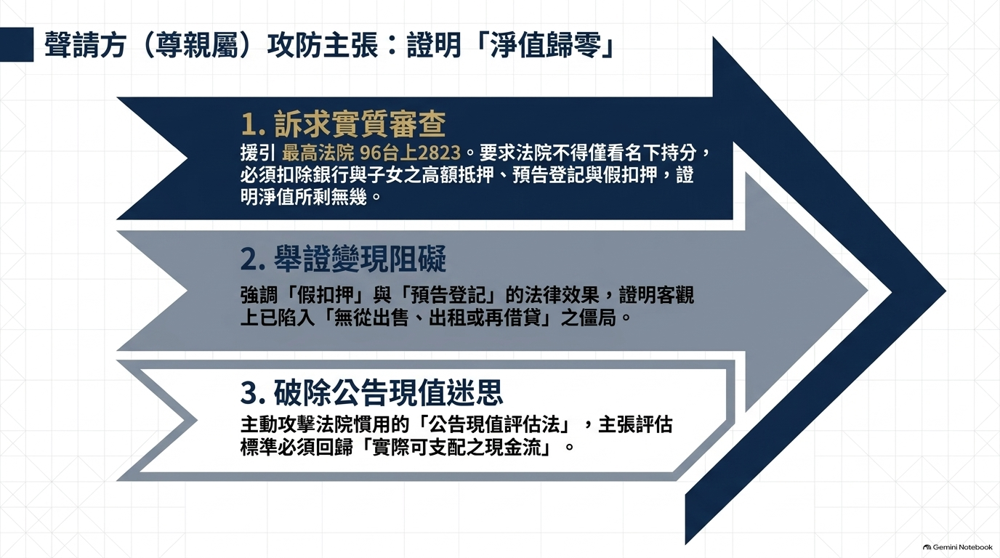
10/14
公告現值評估
法院慣以公告現值評估持分價值（臺南 110 家聲 81、臺中 104 家親聲 445）
拍賣無人應買 ≠ 變現困難
須舉證積極無法處分（臺南 113 家聲 22）
最大風險：規避扶養義務
子女前設定抵押＋預告登記，可能被定性為父子共謀規避扶養 → 誠信原則／權利濫用攻擊（士林 114 家親聲抗 46）
另有流動資產
若另有現金／存款足額 → 非不能維持生活（高雄少家 115 家聲抗 25：有 305 萬即駁回）
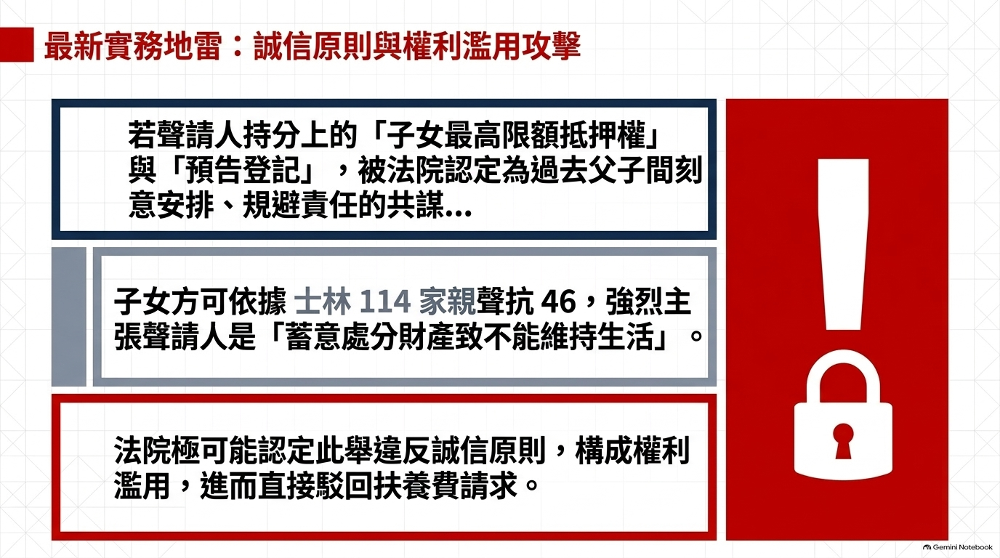
11/14
判決
層級
要旨
最高法院 96 台上 2823
財產須扣除負債後實質審查；769 萬－負債 500 萬 → 發回
最高法院 108 台上 1757
言詞辯論終結時財產＋日後消減情事認定
最高法院 78 台上 1580
不能以自己財產及勞力所得維持生活
高院 110 上更一 40
★ 有資產但受抵押限制仍認不能維持生活
北院 100 重訴 670
財產無法出租出售變現即認不能維持生活
臺中 104 家親聲 445
有土地持分 165 萬但未舉證無法處分 → 駁回
臺南 110 家聲 81
自住房 85 萬可抵押借貸 → 能維持生活
臺南 113 家聲 22
僅公告現值 216 萬即可維持 → 駁回
高雄少家 115 家聲抗 25
售屋款 305 萬可供支配 → 未達不能維持生活
士林 114 家親聲抗 46
蓄意處分財產致不能維持 → 違反誠信原則
11/14
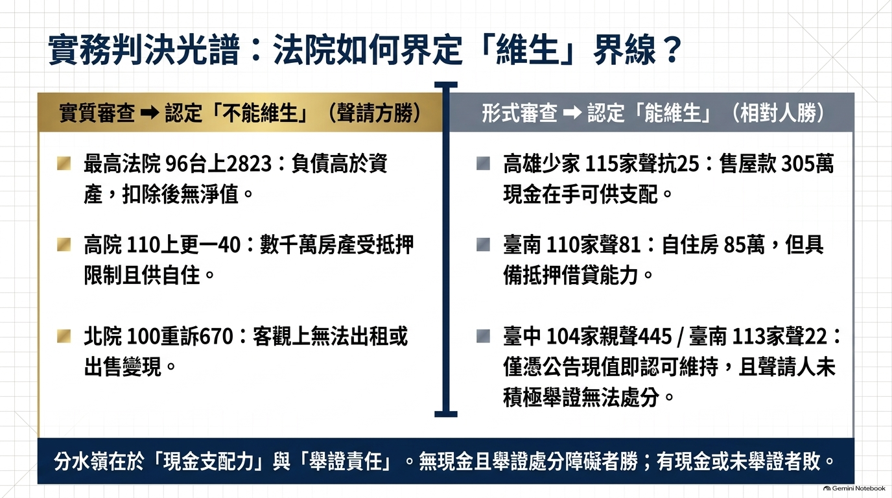
12/14
清查資產為第一優先
聲請調取稅務電子閘門財產所得明細
抗辯主軸
公告現值評估 → 足以維持生活；曾設定抵押 → 有融資能力
誠信原則攻擊
若子女抵押為父子間安排 → 主張權利濫用
減輕免除抗辯
§1118 減輕義務／§1118-1 受扶養人未盡義務
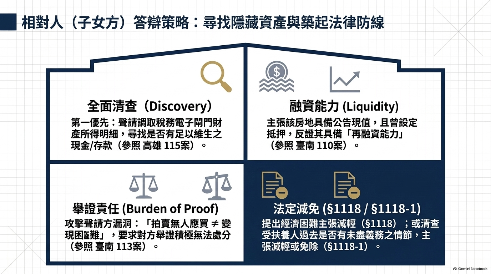
13/14
§1117：直系血親尊親屬僅須證明「不能維持生活」，無須證明無謀生能力
兩條路線：無財產（81 台上 1504）／財產＋勞力（78 台上 1580）
有財產 ≠ 能維持生活：重點在資產可否實際運用變現（108 台上 1757）
最相近判決：110 上更一 40——高額抵押限制下，65 歲退休仍認不能維持生活
最大風險：抵押安排被定性為規避扶養義務 → 誠信原則攻擊（114 家親聲抗 46）
實務趨勢：蓄意處分財產致自陷貧困 → 權利濫用，請求駁回
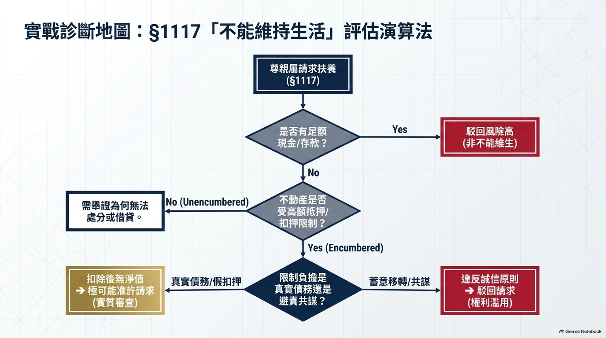
扶養費請求：「不能維持生活」之判斷標準與實務攻防
本簡報為法律教育用途，案件事實已依個人資料保護法去識別化
判決字號業經司法院系統核實，正式引用前請再行確認
謝秉錡律師事務所 2026 年 8 月
14/14